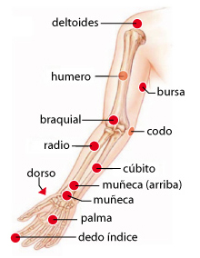

84. Deltoides
84. Deltoides
Deltoides:
Sífilis por Treponema palidum
Riñón (hl):
Leishmania
Cervical:
Balantidium tifo
Tensor escápula:
Deformaciones
Cuadrado lumbar:
Falso lupus
85. Húmero
85. Húmero
Húmero:
Enterobacter pneumoniae
86. Tendón triceps
86. Tendón triceps
Aquiles:
Balance energético
87. Braquial
87. Braquial
Braquial:
Estreptococo A
88. Bursa
88. Bursa
Bursa:
Actinómices
Codo:
Estreptococo B
Bursa:
Apego, miedo
89. Biceps
89. Biceps
Biceps:
Hipertactividad
Biceps:
Dislexia
Biceps:
Intoxicación X bismuto
90. Pliegue del brazo
90. Pliegue del brazo
Pliegue del brazo:
Inflamación de anginas
91. Codo
91. Codo
Codo:
Trastornos oculares
Codo:
Micosis
Braquial (hl):
Lepra
92. Radio
92. Radio
Radio:
Microsporum
Radio:
Malassesia furfur
93. Cúbito
93. Cúbito
Cúbito:
Herpes 3
94. Muñeca
94. Muñeca
Muñeca:
Rickettsia
Muñeca:
Alzheimer
Muñeca:
Concentración
Tibia int.:
Equilibrio energético
Riñón:
Hipertensión
Rodilla ext.:
Enuresis nocturna
95. Muñeca arriba
95. Muñeca arriba
Muñeca arriba:
Migraña
Riñón:
Estómago, disfunción
Riñón (D):
Autismo (falso)
96. Plexo muñeca
96. Plexo muñeca
Plexo muñeca:
Herpes V
97. Palma, mano
97. Palma. mano
Palma:
Plasmodium vivax
Palma:
Fibromialgia
Palma:
Apego, anclaje
98. Dorso
98. Dorso
Dorso:
Proteus mirabillis
Dorso:
Duda
99. Dedo índice
99. Dedo índice
Dedo índice:
E-coli, reservorio
Pulgar:
Rickettsia
100. Dedo medio
100. Dedo medio
Dedo medio:
Tiña
101. Unguis
101. Unguis
Unguis:
Onicomicosis
102. Pulso radial
102. Pulso radial
Pulso radial:
Presión arterial
103. Tendón triceps
103. Tendón triceps
Aquiles:
Equilibrio energético
104. Axila
104. Axila
Axila:
Rabia virus
Axila:
Pánico
Timo:
Alergia respiratoria
105. Arteria axilar
105. Arteria axilar
Arteria axilar:
Estreptococo G
106. Plexo axilar
106. Plexo axilar
Plexo axilar:
Papiloma virus
107. Infraaxilar
107. Infraaxilar
Infraaxilar:
Pleuritis viral
108. Retroaxilar
108. Retroaxilar
Retroaxilar:
Estreptococo C
Más pares...
Continuar...
Rastrear puntos de Torso
P-19. Dedo gordo, pulgar
P-19. Dedo gordo, pulgar
Indice (nudilo):
Malos hábitos?
P-20. Nudillo índice
P-20. Nudillo índice
Nudillo índice:
Malos hábitos
P--. Dedo anular
P--. Dedo anular
Pulgar:
No identificado
Continuar...
Continuar...
Rastrear puntos de Torso
Rastreo Brazos
Cabeza
Cuello
Brazos
Torso
Dorso
Piernas
Otros
Puntos, lista